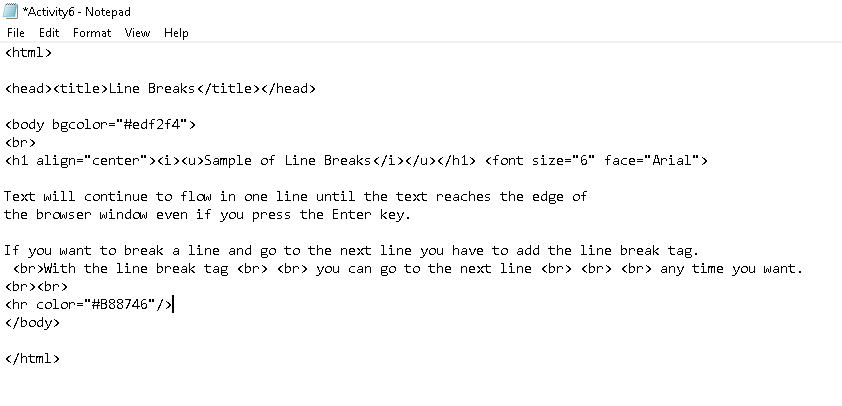

Sample of Line Breaks
Text will continue to flow in one line until the text reaches the edge of the browser window even if you press the Enter key. If you want to break a line and go to the next line you have to add the line break tag.
With the line break tag
you can go to the next line
any time you want.
Source Code:
